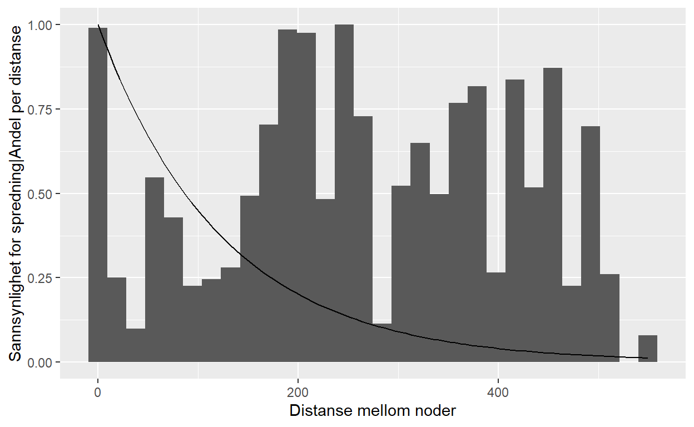
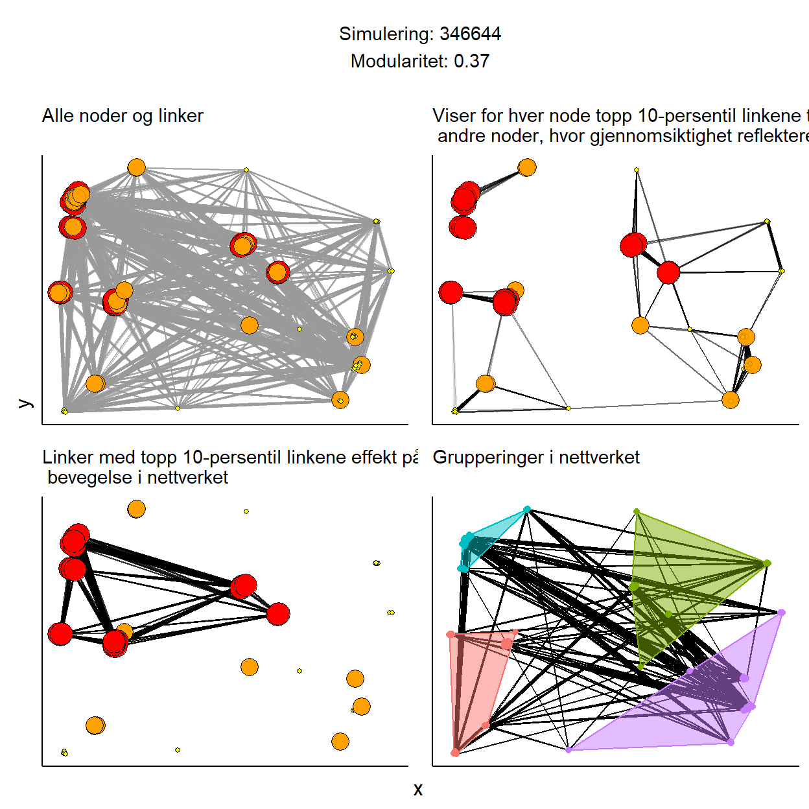

Klynger i nettverket og lenkene imellom.
I en tidligere post om metapopulasjoner skrev vi om hvordan konnektivitet i en metapopulasjon kan skildres basert på avstanden mellom delområdene (\(d_{ij}\)) og størrelsen av delområdene (\(A_{i}A_{j}\)). Større konnektivitet er ofte assosiert med høyere utveksling mellom områdene \(i\) og \(j\): \(m_{ij} = e^{-\alpha d_{ij}}A_{i}A_{j}\), og derfor større sannsynlighet for tilstedeværelse av en bestand (Ranius et al. (2014)).
Man kan beskrive bevegelsen mellom alle områdene (dvs. for hele metapopulasjonen) med en kvadratisk matrise M hvor lengden (og bredden) er lik antall områder og fyller den med verdiene \(m_{ij}\). For denne matrisen så finner vi eigenverdien \(\lambda_{M}\). \(\lambda_{M}\) kalles også for metapopulasjonens kapasitet. Egenverdien er da proporsjonal med andel bebodde områder (\(h\) i modellene til Levins (1969), Levin (1970); også tilsvarende \(p\) i likning 3 her).
Parametrene som inngår i lambda M er teoretisk knyttet til bestandens overlevelse. Noe som også er bekreftet eksperimentelt (Molofsky and Ferdy (2005), Govindan et al. (2015)) og i felt (Bulman et al. (2007)).
distP
grid.arrange(grobs = list(a+th,
b+th,
c+th,
d+th,
textBox),
left = ggpubr::text_grob("y",
rot = 90,
vjust = 1),
bottom = ggpubr::text_grob("x",
rot = 0,
vjust = 0),
layout_matrix = rbind(c(5, 5),
c(5, 5),
c(1, 2),
c(1, 2),
c(1, 2),
c(1, 2),
c(1, 2),
c(1, 2),
c(1, 2),
c(3, 4),
c(3, 4),
c(3, 4),
c(3, 4),
c(3, 4),
c(3, 4),
c(3, 4)))
Egenvektoren til egenverdien beskriver som nevnt tidligere hvor viktig et gitt område er. I fagområdet knyttet til nettverksanalyser så blir dette omtalt som egenvektor sentralitet eller egensentralitet. Egensentraliteten øker med sentraliteten til tilgrensende noder, ikke antall tilgrensende noder.
Bonacich (1972), Bonacich (2007)
Grilli, Barabás, and Allesina (2015)
Identifisere viktige områder: - Watson et al. (2011) - Jacobi and Jonsson (2011)